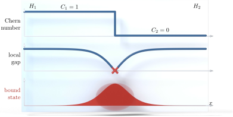

Advanced Quantum Materials 2027 · All lectures · Lecture notes
Session 3. Topological Band Structure Theory
3.13 Closing summary

The Hall conductivity, computed with linear response theory from the wavefunction expansion (3.1), becomes an integral of the Berry curvature over the Brillouin zone. For any gapped system it is quantized to an integer, the Chern number, so that \(\sigma_{xy} = C\,e^2/h\) (3.4).
The quantum Hall state realizes this with flat Landau-level bands, and each of them gives Chern number \(1\). The bulk gap forces the current onto chiral edge states, with one direction per edge, which is why they cannot backscatter and why the plateaus are quantized so sharply, as we saw in Section 3.6.
Topology classifies Hamiltonians by whether their band structures can be continuously deformed into each other without closing the gap. The Chern number is the invariant of this classification, and an interface between regions with different Chern numbers must have a gapless state, which is the general bulk-boundary correspondence of Section 3.7.
The SSH model is the minimal one-dimensional realization. It has a \(2\times 2\) Bloch Hamiltonian (3.5) whose lower-band Zak phase (3.6) is \(0\) in the trivial phase or \(\pi\) in the topological phase, depending on whether the intracell hopping is larger or smaller than the intercell hopping, and the topological phase has protected zero-energy modes at the ends of the chain.
A lattice with a massive Dirac equation (3.7) gives Chern number \(\tfrac12\, \mathrm{sgn}(m)\,\mathrm{sgn}(\lambda)\) for each Dirac point (3.8). Whether the contributions of Dirac points related by time reversal cancel or add depends only on how the mass term transforms under time reversal. This is what separates a trivial gap, from a staggered sublattice potential, from a real Chern insulator, which is the Haldane model. This is the answer to the opening question of the session, which was what happens when we open a gap in the Dirac cone of the honeycomb lattice.
If we put together two copies of (3.7) with opposite masses, one for each spin, time-reversal symmetry is preserved (\(C=0\)) and the spin Chern number \(C_s=\pm2\) stays non-trivial (3.9). This is the quantum spin Hall insulator, with helical edge states that are protected by Kramers degeneracy and not by a broken symmetry.
The same invariants apply beyond electrons, to magnons and spinons in sessions 6 and 8, and also beyond quantum mechanics, to any system with a dispersion relation.
In the next session we come back to the flat-band case from session 2 and study it in detail. We will see the full quantum Hall effect, Landau levels from first principles, and the fractional quantum Hall state.
What decides whether the two Dirac points of the honeycomb lattice give Chern numbers that cancel or that add?
Show the answer
The correct option is D.
A staggered potential is even under time reversal and gives the same mass at both valleys, so the half-integers cancel. The Haldane coupling is odd under time reversal, so the half-integers add.
Which symmetry protects the helical edge states of the quantum spin Hall insulator?
Show the answer
The correct option is A.
Translational symmetry and gauge invariance protect the Chern number. The helical edge is protected by time reversal, and it holds even when spin is not conserved.